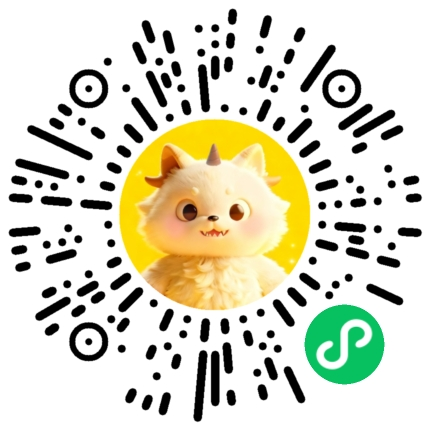

勤思妙享 · 勤敏人类图
总览
🌱 入门系列
🌿 进阶系列
🌳 高阶系列
目录索引
🔮 免费出图
📬 联系我们
📅 预约咨询
☰
📚 教学研究
▾
📖 入门手册
📣 人类图领读者计划
⚛️ 量子人类图
🪐 占星人类图
🦁 人类图领导力
🎯 人类图教练
🎨 人类图实践艺术
💬 沟通的艺术
🎁 天赋才华课程
📐 按设计工作
🏹 人类图四箭头
🧭 决策环境设计
🧬 基因天命·体证之旅
🛠️ 应用研发
▾
人类图 HUMAN DESIGN
☯️ 64闸门·易经卦象转译查询
🏛️ 64 闸门完全指南
🔗 36通道
🔢 384爻
✨ 192交叉
💰 财运之道
👥 BG5商业应用
🌈 CTB变量分析
⏱️ 生时校准
🃏 抽卡中心
基因天命 GENE KEYS
🧬 基因天命·标准曼陀罗
🧬 中文全息基因图生成器
数字命理 NUMEROLOGY
🧮 数智中心
🔢 生命数字密码
🔯 生命灵数系统
🗺️ 曼格拉生命数字地图
📛 姓名结构分析
☯️ 玹历八字排盘
🏮 嘉名·姓名能量
💡 行业赋能
▾
保险赋能
🚀 优增优育项目
🧭 保险职业适配系统
🛡️ 保险赋能智能体
🤖 AI异议陪练
🔄 保险增长飞轮智能体
💰 展业工具·财富100
💯 展业工具·百分卡
测评中心
📊 测评系统
活动中心
🎭 《维摩诘所说经》话剧
👪 蹲下来·智慧父母沙龙
勤思妙享 · 勤敏人类图
✕
HUMAN DESIGN · 勤思妙享
人类图
完整系列
从零基础到高阶解读，55篇图解文章构成完整知识体系。
每篇配 SVG 示意图 · 核心卡片 · 速查表格 · 实战路径
55
篇完整图解
3
层级体系
60+
张图解卡片
📚 学习路径 ·
三层进阶体系
🌱
入门系列
建立认知 · 截获流量
6 篇
→
🌿
进阶系列
深度转化 · 建立信任
7 篇
→
🌳
高阶系列
深化变现 · 高净值服务
6 篇
🌱 入门系列
适合零基础用户，建立人类图核心认知框架
🌱
入 门
人类图入门系列 · 完整6篇
从零开始，图文并茂掌握人类图基础知识体系
四大类型
九大能量中心
策略与权威
通道与闸门
生活实践
📖 第①篇 · 什么是人类图
📖 第②篇 · 四大类型
📖 第③篇 · 九大能量中心
📖 第④篇 · 策略与权威
📖 第⑤篇 · 通道与闸门
📖 第⑥篇 · 运用于生活
🌿 进阶系列
适合有基础用户，深入理解性格与关系模式
🌿
进 阶
人类图进阶系列 · 完整7篇
深度解读性格底色、能量流动与关系互动模式
12种轮廓
三大回路
四种定义
四箭头变量
爻线深解
关系互动
实操手册
📖 第①篇 · 轮廓 Profile（12种人生角色）
📖 第②篇 · 回路系统（三大回路）
📖 第③篇 · 定义类型（单一/分裂/三分/四分）
📖 第④篇 · 变量与四箭头
📖 第⑤篇 · 爻线六种性格深解
📖 第⑥篇 · 跨类型关系解读
📖 第⑦篇 · 完整实操手册
🌳 高阶系列
适合深度用户，探索人生使命与时机奥秘
🌳
高 阶
人类图高阶系列 · 完整6篇
通往人生使命、完整能量图谱与高阶解读能力
轮回交叉
非自己主题
行星系统
权威深层
64闸门
生命周期
📖 第①篇 · 轮回交叉（人生使命）
📖 第②篇 · 非自己主题
📖 第③篇 · 行星 × 轮回六线
📖 第④篇 · 权威深层机制
📖 第⑤篇 · 64闸门全景
📖 第⑥篇 · 生命周期与时机
📑 完整目录索引
点击直接跳转到对应文章
全部 55 篇
🌱 入门 6篇
🌿 进阶 7篇
🌳 高阶 6篇
🔮 36通道
①
入门 · 什么是人类图
起源、框架与核心理念
🌱入门
②
入门 · 四大类型
生成者/投射者/反映者/Manifesting
🌱入门
③
入门 · 九大能量中心
顶部/逻辑/喉咙/意志/情绪/直觉/根部/脾/荐骨
🌱入门
④
入门 · 策略与权威
等待回应 · 跟随内在权威做决策
🌱入门
⑤
入门 · 通道与闸门
36条通道 · 64个闸门能量图
🌱入门
⑥
入门 · 运用于生活
实操练习 · 日常决策场景
🌱入门
①
进阶 · 轮廓 Profile
12种人生角色完整图解卡
🌿进阶
②
进阶 · 回路系统
三大回路能量流动详解
🌿进阶
③
进阶 · 定义类型
单一/分裂/三分/四分 四种定义
🌿进阶
④
进阶 · 变量与四箭头
消化/动力/视角/环境 4箭头详解
🌿进阶
⑤
进阶 · 爻线六种性格深解
6种爻线完整卡片 · 含阴影警示
🌿进阶
⑥
进阶 · 跨类型关系解读
5×4 关系互动速查表
🌿进阶
⑦
进阶 · 完整实操手册
7步操作流程 · 个人整合模板
🌿进阶
①
高阶 · 轮回交叉
四轴闸门组合 · 人生使命图
🌳高阶
②
高阶 · 非自己主题
四步陷阱→信号→出路 流程图
🌳高阶
③
高阶 · 行星 × 轮回六线
9大行星角色卡 · 6条意识进化路径
🌳高阶
④
高阶 · 权威深层机制
情绪波峰波谷 · 5种权威质地
🌳高阶
⑤
高阶 · 64闸门全景
8×8完整矩阵图 · 高阶速查索引
🌳高阶
⑥
高阶 · 生命周期与时机
四季人生图 · 轮回十字 · 时机判断
🌳高阶
①
什么是人类图
起源、框架与核心理念
②
四大类型
生成者/投射者/反映者/Manifesting
③
九大能量中心
9个能量中心详解
④
策略与权威
等待回应 · 做正确决策
⑤
通道与闸门
36条通道 · 64个闸门
⑥
运用于生活
实操练习 · 日常场景
①
轮廓 Profile
12种人生角色完整图解
②
回路系统
三大回路能量流动
③
定义类型
单一/分裂/三分/四分
④
变量与四箭头
消化/动力/视角/环境
⑤
爻线六种性格深解
含阴影警示
⑥
跨类型关系解读
5×4 关系速查表
⑦
完整实操手册
7步流程 · 整合模板
①
轮回交叉
人生使命图
②
非自己主题
陷阱→信号→出路
③
行星 × 轮回六线
9行星 · 6进化路径
④
权威深层机制
波峰波谷 · 权威质地
⑤
64闸门全景
8×8矩阵 · 高阶索引
⑥
生命周期与时机
四季人生 · 时机判断
1
通道 1-8 · 灵感
你觉得自己没创意，恰恰因为你最有创意
2
通道 2-14 · 方向
为什么你越努力寻找人生方向，就越迷茫？
3
通道 3-60 · 突变
你心里那股没来由的焦躁，是生命在催你进化
4
通道 4-63 · 逻辑
那个总爱"抬杠"的人，可能是人群里最清醒的
5
通道 5-15 · 节奏
你的人生，不需要追赶任何人的时间表
6
通道 6-59 · 亲密
你的感情总是"差一点"，可能是因为太想抓紧
7
通道 7-31 · 领导
你不是不爱当领导，你只是还没找到自己的"光"
8
通道 9-52 · 专注
你的人生，不需要同时挖十个井
9
通道 10-20 · 觉醒
你的"好人缘"，正在悄悄杀死你
10
通道 10-34 · 探索
从"我不行"到"我试试"，你只差一个信念的翻转
11
通道 10-57 · 直觉
为什么你总在"事后"才想起当初那个念头是对的？
12
通道 11-56 · 好奇
为什么他说话，你总想听下去？秘密藏在"故事脑"里
13
通道 12-22 · 开放
你说话总被误解？可能你只是用了错误的"频道"
14
通道 13-33 · 见证
你浪费的那些年，正在成为你未来的答案
15
通道 16-48 · 才华
你只是还没找到那个值得深挖的领域
16
通道 17-62 · 接纳
逻辑，是最高级的共情力
17
通道 18-58 · 修正
你的"失败史"，才是你最值钱的履历
18
通道 19-49 · 融合
为什么你越用力对一个人好，对方反而越想逃？
19
通道 20-34 · 忙碌
你不是行动力差，你只是在用忙碌逃避真正重要的事
20
通道 20-57 · 直觉
你人生中最正确的决定，往往只用0.1秒
21
通道 21-45 · 金钱
你对钱的所有焦虑，都源于一个核心信念
22
通道 23-43 · 天才
你的"奇怪想法"，是这个时代最稀缺的资产
23
通道 24-61 · 思考
你深夜的辗转反侧，不是失眠，是天赋在敲门
24
通道 25-51 · 发起
你心里那股"不安分"，不是缺陷，是宇宙在推你一把
25
通道 26-44 · 投降
最好的销售，从不"卖"东西
26
通道 27-50 · 信任
你不敢相信任何人，可能是因为你不相信自己值得被爱
27
通道 28-38 · 挣扎
如果人生注定要挣扎，不如选一个值得的方向
28
通道 29-46 · 发现
你的身体，正在用你没注意到的方式和你对话
29
通道 30-41 · 燃烧
你的"理想主义"不是缺点，是别人看不见的光
30
通道 32-54 · 转化
承认自己有野心，比假装佛系勇敢一万倍
31
通道 34-57 · 直觉
为什么你总在"感觉"到一些说不清的事？那是你的身体在说话
32
通道 35-36 · 变化
你害怕的不是改变，而是从未真正活过
33
通道 37-40 · 家庭
你与父母的关系，正在悄悄定义你所有的爱
34
通道 39-55 · 情绪
你所谓的"情绪稳定"，正在杀死你的生命力
35
通道 42-53 · 成熟
你以为的成熟，只是学会了把哭声调成静音
36
通道 47-64 · 理解
天才和普通人之间，只隔着一个"思维工具"
🔮
⚡ 免费出图
生成你的专属人类图
请用微信扫一扫打开小程序
输入出生信息，立即获得完整的人类图谱

📅 一对一咨询
预约你的专属人类图解读
由讲师邓勤敏亲自解读，带你读懂自己的类型、内在权威与人生设计，把人类图真正用进生活与决策。
🌟 显示者 / 生产者 / 投射者 / 反映者 —— 精准定位你的类型与策略
🔮 内在权威与决策方式深度梳理，告别"头脑纠结"
💡 人生角色、关键通道、轮回交叉个性化解读
立即预约咨询 →
👤
邓勤敏
人类图讲师 · 解读咨询
🛠️ 深度工具
专业级查询工具，点击直接打开
📖
入门必读
人类图入门手册
从零开始认识人类图，类型/权威/Profile/通道一册通，图文并茂适合初学者
五大类型
内在权威
人生角色
36通道
⚛️
课件精品
量子人类图
量子人类图系统课件，深度解读能量与意识的量子层面关系
量子能量
意识进化
能量图谱
深度解读
🪐
占星专题
占星人类图
融合占星术与人类图，探索星体能量与生命蓝图的深层共鸣，揭示宇宙与个体的神秘连接
占星融合
星体能量
宇宙图谱
深度解读
🎯
教练课程
人类图教练
人类图教练技术认证课程，掌握专业教练工具与实操训练，开启人类图职业教练之路
教练技术
认证课程
实操训练
职业发展
🎨
实践艺术
人类图实践艺术
人类图四门生活艺术课程系列，从臣服、沟通、领导到爱，将内在设计活成日常艺术
臣服的艺术
沟通的艺术
领导的艺术
爱的艺术
💬
COURSE 02
沟通的艺术
不是你不会说话，是你们不在同一个频道。用人类图读懂对方的能量类型，用他的语言开口
四类型开关
频道对照表
四模块实操
速查卡练习册
🎁
天赋课程
天赋才华课程
人类图36条通道天赋解码课程，按四大回路系统解读你的天赋才华，从"我有什么天赋"走向"我如何活出天赋"
四大回路
36通道
天赋筛选
学员物料
🚀
优增优育
优增优育项目
人类图 × 保险中支优增优育赋能方案，用设计类型匹配增员培育，打造高留存代理人团队
优增匹配
优育培育
职业适配
团队赋能
深度工具
64 闸门完全指南
人类图64闸门完整图解，含闸门名称、能量主题、所在中心与通道连接，点击直达详解
64闸门
能量主题
中心归属
图解速查
🔗
速查工具
36条通道速查
人类图全部36条通道的文章目录索引，含通道名称、短描述，点击直达详解文章
36通道
文章索引
快速跳转
能量通道
🔢
深度工具
384爻深度分析
64卦 × 6爻全覆盖，人格星与设计星双线对照，含闸门主题与爻线含义
64闸门
6爻解读
人格星/设计星
双线对照
✨
深度工具
192种轮回交叉查询
RA · JX · LA 三种角度完整覆盖，192张使命卡，支持搜索与多维筛选
RA 角度
JX 角度
LA 角度
使命主题
🧬
深度工具
基因天命 384爻
基因天命(Gene Keys) 64卦 × 6爻深度解析，阴影·天赋·悉地三重境界对照
阴影层
天赋层
悉地层
384爻
💰
财运分析
财运之道
基于人类图设计，输入类型/权威/Profile/闸门，生成专属财富路径分析与综合画像
能量类型
内在权威
财运闸门
财富路径
👥
BG5工具
BG5 团队能量图谱
基于BG5商业人类图，录入团队成员类型/权威/定义/通道，生成团队能量分布图谱与盲区诊断
团队能量类型
Penta六支柱
能量盲区诊断
互动建议
🌈
CTB工具
CTB 能量变量分析
Color · Tone · Base 爻线之下的三层能量解码，输入四个变量的数值获取深度解读
Color颜色
Tone音调
Base基底
四箭头组合
⏱️
校准工具
生时校准服务
出生时间不精确？用你的人生重大事件反推最可能的出生时间，确保人类图精准
时间反推
事件校准
图表差异对比
精确到爻
能量抽卡
抽卡中心
人类图肯定语句抽卡，四大维度深度指引：类型·权威·中心·闸门，每日能量觉察与行动建议
肯定语句
64闸门能量
每日指引
自我觉察
🌟 与全球研究者连接
Human Design · 勤思妙享
📧
Email
dengqinmin@163.com
💬
WeChat
Khimmin
📢
微信公众号平台
勤思妙享
欢迎交流 · 共同探索人类图奥秘
↑
🌱
🌿
🌳
🔮
📅
📖
⚛️
🪐
🎯
🎨
💬
🎁
🚀
🔗
🔢
✨
🧬
💰
👥
🌈
⏱️